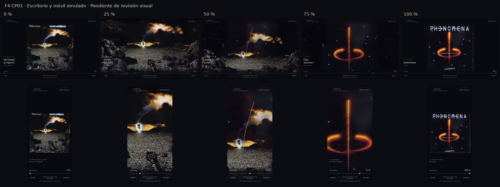
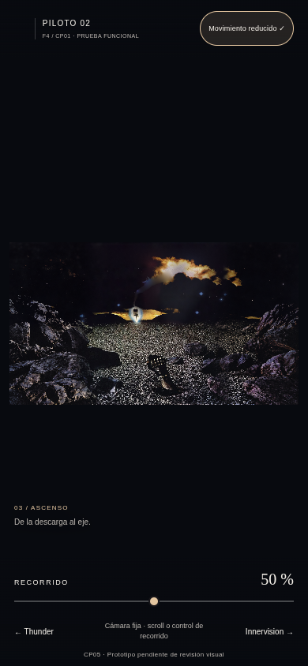
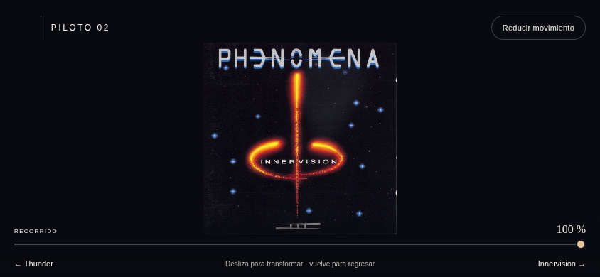
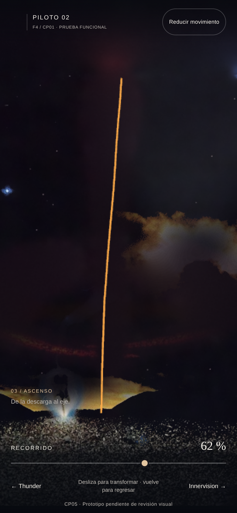
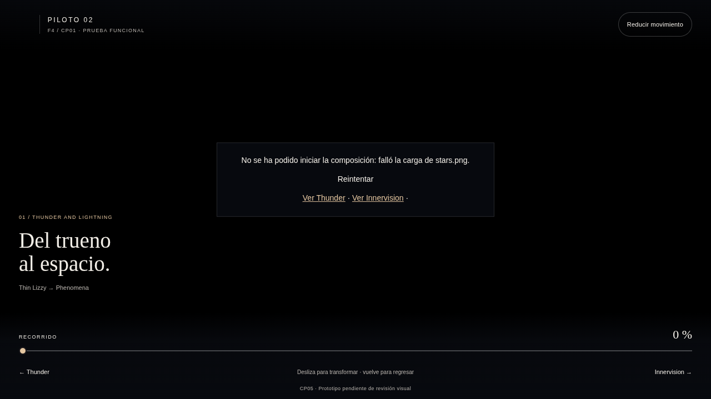

PILOTO 02 · F4 CP01 v1.0
Thunder and Lightning → Innervision
Prototipo funcional para revisión. La aprobación visual y la calidad cinematográfica siguen pendientes. Esta página presenta evidencias; para probar el scroll real, ejecutar python3 prototipo/server.py y abrir la dirección local indicada en README.
Movimiento completo de ida y vuelta
Captura real del navegador de pruebas; conversión a MP4 sin generar estados intermedios artificiales. Ver registro de captura. No certifica FPS en un teléfono físico.
Extremos y estados principales

Escritorio
Móvil emulado
Tramos de revisión: 40–70 % y 90–100 %
Comprobar la reparación bajo el rayo, el relevo de la línea y el signo, el retiro del suelo y la restitución de textos y perímetro documental.
Movimiento reducido y orientación horizontal

Cámara y terreno fijos, sin trazo móvil intermedio.
Horizontal 844×390.
Control mediante toque emulado.
Prueba de fallo deliberado de recurso, separada del flujo normal.